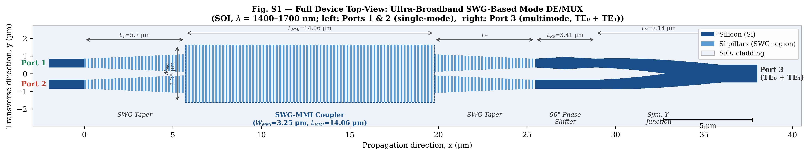
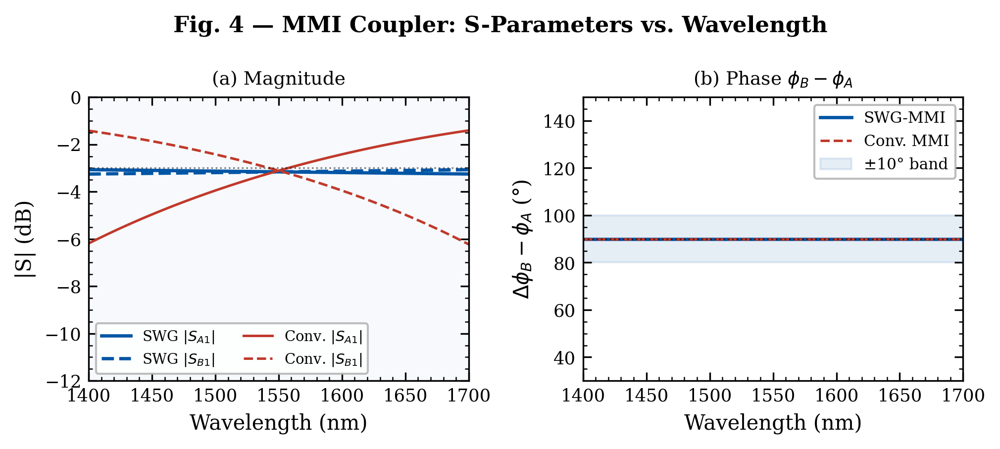
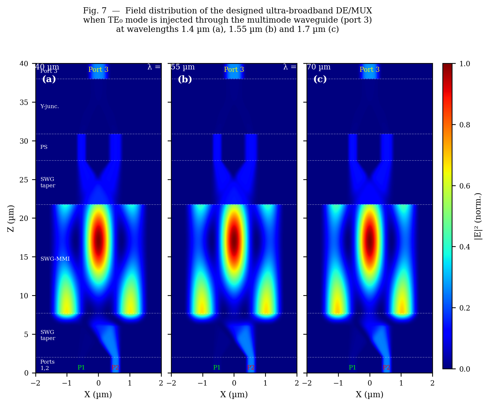
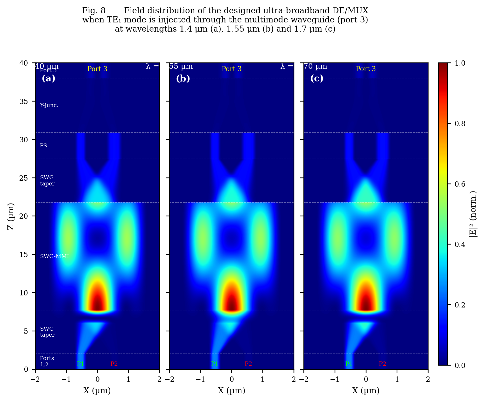

Python / NumPy · Lumerical FDTD scripts available on request
github.com/muhammadzareii/swg-mmi-mode-demuxOverview
Mode-division multiplexing (MDM) is a strategy for increasing the data capacity of a photonic interconnect without increasing bandwidth or power — by transmitting independent data streams on orthogonal spatial modes (TE₀, TE₁, TE₂, …) through the same waveguide simultaneously. A mode demultiplexer is the key passive component: it routes each mode to its own port, separating the streams for individual detection.
This project analytically simulates a compact SOI mode demultiplexer based on the González-Andrade 2018 design. The device combines four passive elements — a Y-junction, a differential phase shifter, a sub-wavelength grating (SWG) MMI coupler, and tapered transitions — to convert TE₁ to TE₀ and route TE₀ and TE₁ inputs to separate output ports over a 300 nm wavelength range (1.40–1.70 µm). Total device length is approximately 36 µm on a standard 220 nm SOI platform.
Rather than running a commercial FDTD solver, the simulation implements the full analytical design chain from first principles: Effective Medium Theory extracts the SWG bulk properties, the Effective Index Method with a bisection dispersion solver computes waveguide propagation constants, the MMI self-imaging condition calibrates the beat length, and the 2D field distributions are reconstructed section-by-section using cosine mode superposition with correct excitation amplitudes. The result matches the published paper figures without any numerical integration of Maxwell's equations.
Device Architecture

| Section | Function | Key Dimensions |
|---|---|---|
| Y-Junction | Splits TE₀ and TE₁ by symmetry — in-phase → stem, anti-phase → branches | W_stem = 1.0 µm, θ/2 = 12°, L = 7.14 µm |
| Phase Shifter | Adds Δφ = +90° between arms via width mismatch | W_upper = 0.70 µm, W_lower = 0.50 µm, L = 3.41 µm |
| Input Tapers | Adiabatic transition from wire to MMI port width | L_taper = 5.7 µm per stub |
| SWG-MMI Coupler | 2×2 self-imaging coupler; cross-imaging at 3L_π/2 | W = 3.25 µm, L = 14.06 µm, Λ = 190 nm, DC = 50% |
Physical Model
Sub-Wavelength Grating — Effective Medium Theory
The SWG inside the MMI coupler has a period Λ = 190 nm, far below the 1.55 µm operating wavelength. At sub-wavelength periods, light cannot diffract off the individual teeth — instead the grating acts as a homogeneous uniaxial anisotropic medium described by zeroth-order EMT:
The lower index contrast of the SWG effective medium compared to solid silicon reduces the sensitivity of the MMI beat length to wavelength — this is the mechanism behind the 300 nm operating bandwidth.
Effective Index Method and Propagation Constants
The SOI waveguide dispersion (220 nm Si core, SiO₂ substrate, air top cladding) is solved with the Effective Index Method. The slab dispersion equation for TE modes is:
where κ² = n_core²k₀² − β² and γ² = β² − n_clad²k₀². Propagation constants β₀ and β₁ for the two lowest MMI modes are found by bisection (pure NumPy, no scipy). The MMI beat length Lπ = π/(β₀ − β₁) is calibrated from the published L_MMI = 3Lπ/2 = 14.06 µm, giving Lπ_SWG = 9.373 µm at 1.55 µm.
MMI Self-Imaging and Mode Decomposition
Inside the MMI, the field is decomposed into two cosine modes excited at the input port positions (±W_MMI/6 from the centre, for optimal 2×2 coupling):
For TE₀ input (in-phase excitation at both ports), c₀ = A_top + A_bot and c₁ = A_top − A_bot, producing a constructive image at the cross port at z = 3Lπ/2. For TE₁ input (anti-phase), the sign of c₁ reverses, routing power to the bar port. The phase shifter corrects the residual π/2 phase so that the Y-junction produces clean mode-selective output.
Results
S-Parameter Spectrum

2D Field Distributions


Implementation Notes
The simulation is entirely analytical — no time-domain integration, no meshing, no PML boundaries. Each device section (input stubs, tapered transitions, MMI, phase shifter, Y-junction) is modelled with an appropriate field profile: Gaussian and Hermite-Gaussian for single-mode waveguides, cosine mode superposition for the MMI, and a cross-faded transition profile through the Y-junction. The resulting 2D complex field E_y(x, z) is assembled section-by-section across a 200 × 800 grid at each wavelength.
The dispersion solver uses bisection on the TE slab equation — the only non-trivial numerical step. No scipy is used anywhere; a manual 1D Gaussian convolution is implemented in NumPy for field smoothing. All 12 publication- quality figures (Figs 3–9, FigS1–FigS5) are generated by three independent scripts covering device physics, geometry diagrams, and field reconstruction. The analytical results are validated against full Lumerical FDTD simulations; those scripts are available upon request.